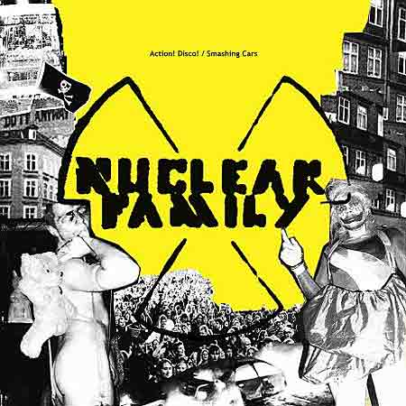

Nuclear Family - Double Single
2007

Nuclear Family's double single "Action! Disco! / Smashing Cars" is now available for download on iTunes through Broken Mirror Records.
FOLLOW THIS LINK TO iTUNES
to listen and download.